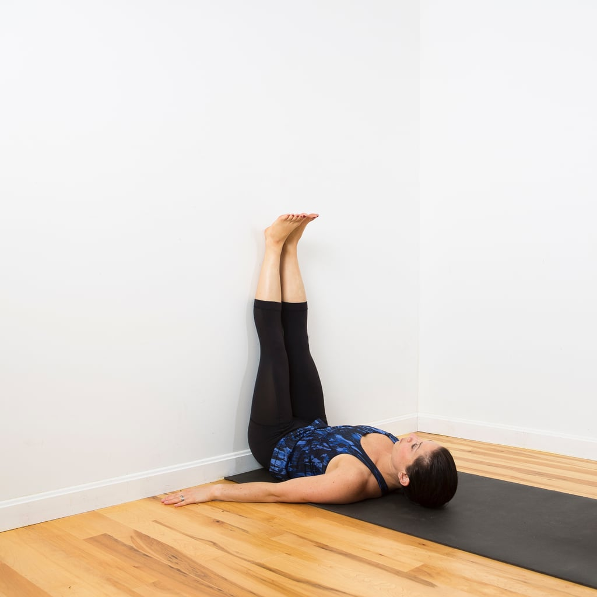
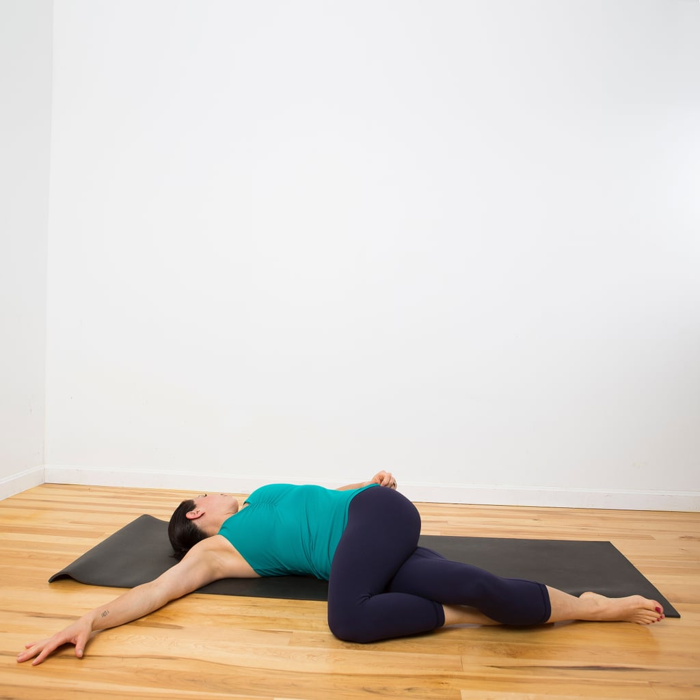
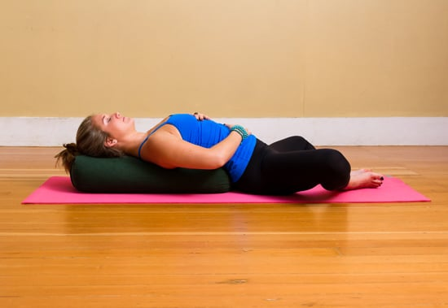
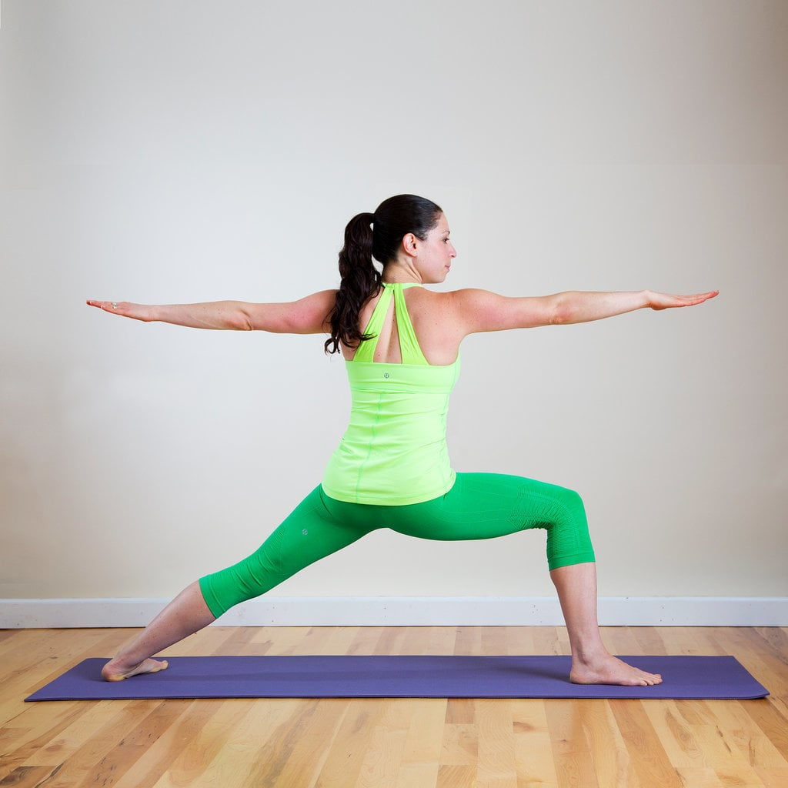
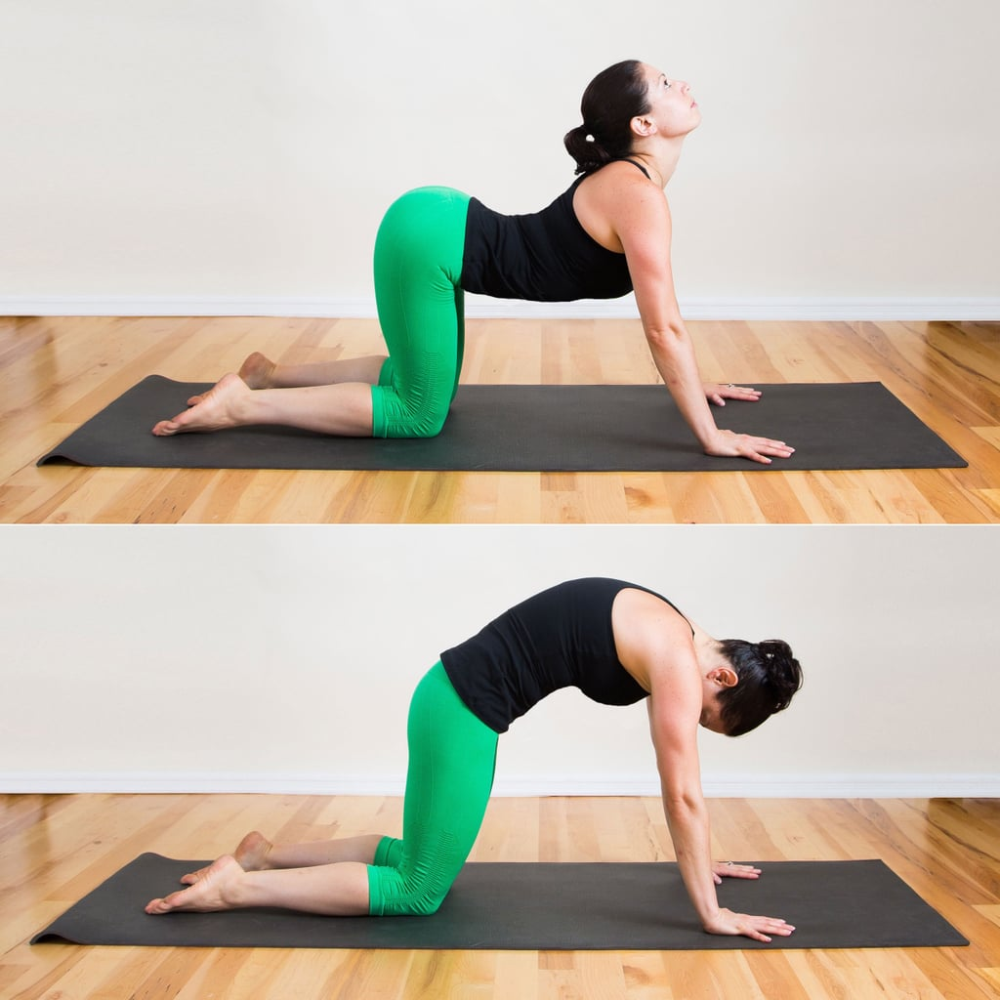
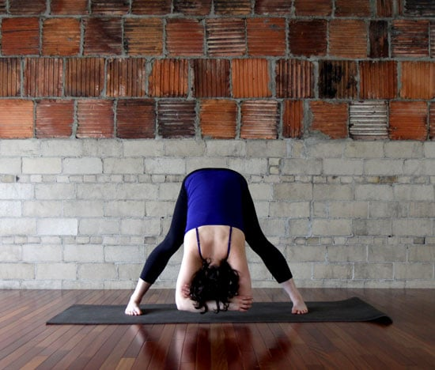
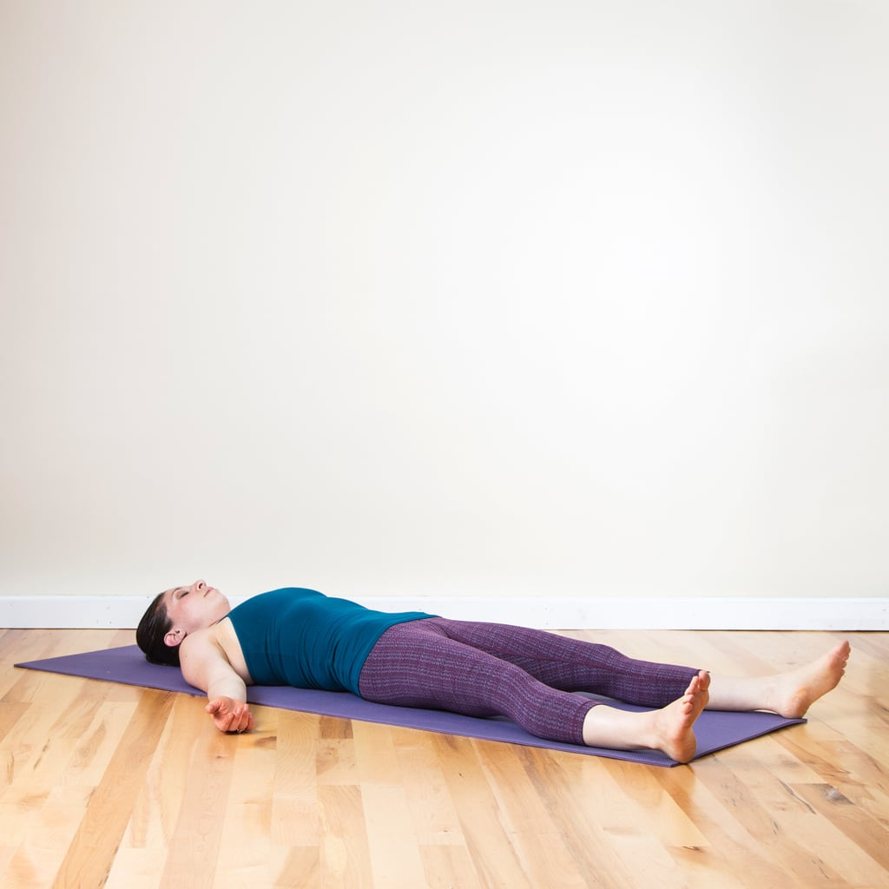

Yoga For Stress
Guides you through various asanas addressing the body, mind and breath. Stretch, Relax and Release stress.
2 Legs Up the Wall

- Sit down as close as you can to the wall. Lie down on your back, place your feet on the wall with your knees bent, and scoot your butt against the wall
- Extend your feet straight up, resting your heels on the wall. Keep your arms by your sides or by your head if you want to stretch your shoulders.
- Close your eyes and allow your entire body to relax, feeling gravity pulling you down as the wall supports you, holding for five or more breaths.
3 Lying Spinal Twist

- Lie on your back, bending your knees into your chest.
- Extend your arms out in T-position.
- Slowly lower both knees to the right. Rest them on the ground, and turn your head to the left. You can increase the stretch by crossing your left knee over your right thigh.
- Hold here for at least five breaths, feeling your spine lengthen and twist. You may even hear some "cracks."
- Use your abs to lift your knees back to center, then repeat on the other side.
4 Reclining Butterfly Pose

- Sit on the floor, bend both knees, and bring your feet together.
- Slowly begin to round your spine down until your back is resting all the way on the ground or on your pillow.
- Draw awareness to keeping your feet together, and allow your knees to drop closer and closer toward your mat. Either keep your arms gently resting on the floor, palms facing, or with one hand on your belly and the other on your heart.
- Hold for at least five breaths.
5 Warrior 2

- Begin on your hands and feet in Downward Facing Dog. Step your right foot forward between your palms
- Extend your arms out in T-position as you rotate your torso to the left, coming into Warrior 2. Ideally your front thigh should be parallel to the ground and your right knee directly over your right ankle. Make sure your shoulders are stacked directly above your pelvis.
- Gaze past your right fingertips, holding for at least five breaths. Then return to Downward Facing Dog. Step your left foot forward and do this pose on the other side
6 Cat Cow Pose

- Begin with your hands and knees on the floor. Make sure your knees are under your hips and your wrists are under your shoulders. Begin in a neutral spine position, with your back flat and your abs engaged. Take a big, deep inhale.
- On the exhale, round your spine up toward the ceiling, and imagine you're pulling your belly button up toward your spine, really engaging your abs. Tuck your chin toward your chest, and let your neck release. This is your cat-like shape.
- On your inhale, arch your back, let your belly relax, and go loose. Lift your head and tailbone up toward the sky — without putting any unnecessary pressure on your neck. This is the Cow portion of the pose.
- Continue flowing back and forth from Cat Pose to Cow Pose, and connect your breath to each movement — inhale for Cow Pose, and exhale on Cat Pose.
- Repeat for 10 rounds.
7 Wide-Legged Forward Bend

- Stand with your legs wider than your hips with your heels turned out wider than your toes.
- Fold your torso over your legs, pressing into the outsides of your feet and keeping your inner arches lifted.
- To increase the stretch, reach for your ankles and gently draw your chest towards your thighs.
- For a more relaxed position, fold your arms and grab your opposite elbows, letting your body hang down.
- Hold for 30 seconds.
8 Savasana

- Lie on your back, and close your eyes. In order to relax and open your body fully, extend your arms a few inches away from the body, with your palms facing up.
- Bring about 15 to 20 inches between your feet, allowing your feet to fall open with your toes pointing out. Actively shrug your shoulders and shoulder blades down toward your hips. Lengthen through your spine as much as possible, and try to press the small of your back into the floor.
- After you've found a comfortable position, enjoy the stillness for five to 10 minutes.
Load More